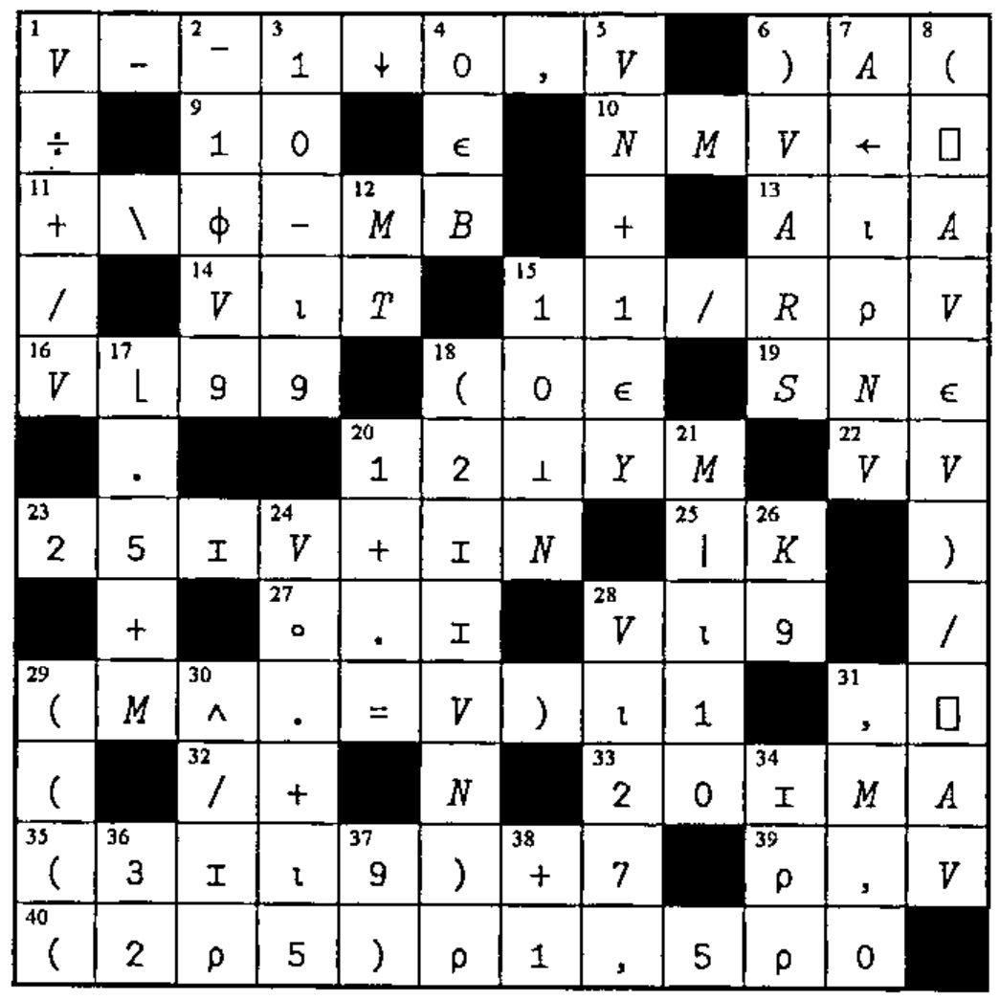
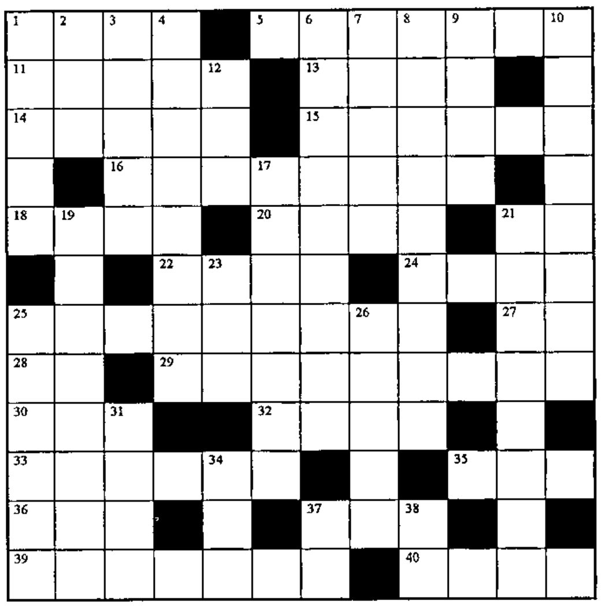

Solution to Crossword from Vector 15.3 and Crossword
Vector 15:4, page 41
Transcribed from the printed issue; not yet reviewed. Read it in the PDF of the issue, page 41
Solution to Crossword from Vector 15.3¶

[Vector Production] This faithfully reproduces Gary's original. Vector Production reckons that the 'i-beam' characters are really multiplication signs. What do you think?
Crossword¶

Across¶
V[I]×B[(1+⍴B)-I]for I from 1 to⍴V, for origin 1 with(⍴B)=(⍴V)- A random integer from 0 to 4, with 0 half as likely as the others
⍳(⍴V)+(⍴B)- The matrix F with its first
M5columns made last - The values in A rounded to the nearest integer (.5 down not up)
- Are all the elements of the vector VN larger than zero?
- The difference of 102 and one-fifth S
(V≠25)/V- Flag the 52s in N
- Get outta here!
0whereS=V,1whereS>V,¯1whereS<V2⌽'(0|A÷B)×C'~'ABC×',⍕0- The index of the first row of the matrix M that CONTAINS the vector V
- The number of rows and columns in K
- The vector
1 2 3 ... L (RV-1),(RV-2),...,(RV-(10+VC))- An empty vector with the same datatype as the scalar S
- Random one-element vector from
¯1to¯9 - Get objects from a stored workspace IF they're not in the active workspace
- All but the first N elements of the vector V
- The number of dimensions in A
- Deal a card from the deck
- Famous earless APL programmer, _______ Van Go To
- Deal five cards from the deck
Down¶
(⍒V)[⎕IO]- Is the vector A nonempty?
- Subtract 12 from each element of V; then reverse their order
- Stick onto matrix B a new column, using the numbers in the vector VR divided by 20
- The index of the first row of the matrix M that MATCHES the vector V
- Five random numbers from 1 to 25, with replacement
2÷109÷(9↓V),9↑Vif(⍴V)≥9- The available programs
- The vector KC with negative values replaced by zero and padded to length 500
- A good name for a function that bombs a lot
M+Y-Nwithout using+- For a bit vector A, where
L←⍴A, reshape bits I to length P, pad to the length of A, and compare A to see where neither is true ((⍴V)=0)/L5- Flag the occurrences of the (start of) substring S in the vector V
- The first element of any nonempty array V, as a scalar
- The vector
1 2 3...up to some random number between 1 and 55 - Cumulative reduction
- What the circle
○function is easy as - A random integer scalar from 1 to T
⍕⍎⌽'2*5'